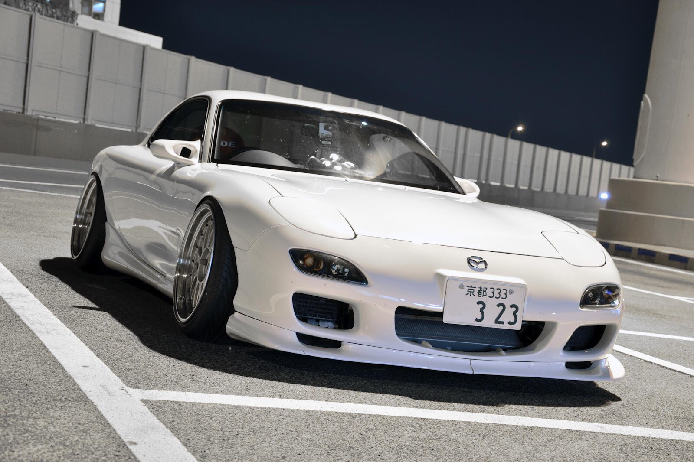

Mazda RX-7
Mazda RX-7 - Спортивный автомобиль, выпускавшийся японским автопроизводителем Mazda с 1978 по 2002 год. Оригинальная RX-7 оснащалась двухсекционным роторно-поршневым двигателем и имела переднюю среднемоторную, заднеприводную компоновку. RX-7 пришла на смену RX-3 (обе в Японии продавались под маркой Savanna), вытеснила все остальные роторные автомобили Mazda за исключением Cosmo. За всю историю Mazda RX-7 было три поколения. Первое поколение выпускалось с 1978 по 1985 год. Второе поколение — с 1985 по 1991. Третье поколение — с 1992 по 2002 год.
| Название | Цена |
|---|---|
| Товар 1 | 100 руб. |
| Товар 2 | 200 руб. |
| Товар 3 | 300 руб. |